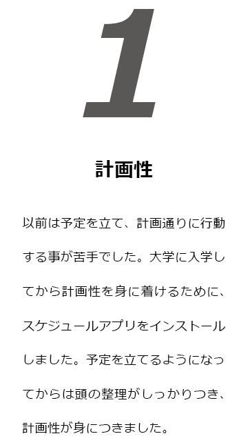
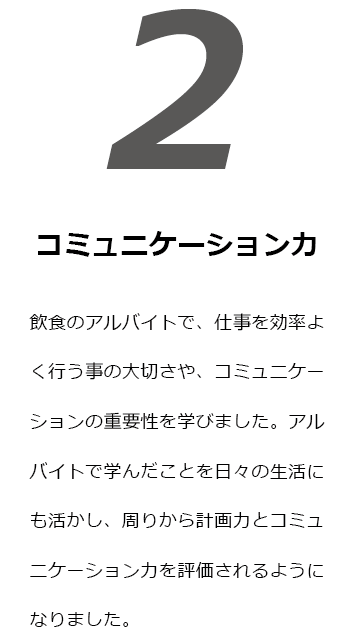
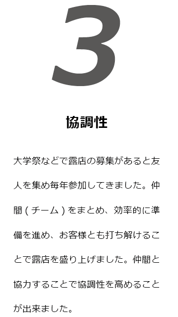

私が大切にすること
私がデザイナーとして大切にするのは、「分かりやすさ」です。
私は作品を作る時も見る人、見て欲しい人を常に意識し、ただ自分の意見を押し付ける
独りよがりな作品とならないように、
作品のテーマに沿ってどんなターゲットに伝えたいか、
どのような内容で伝えたらターゲットに分かってもらえるか考え制作しています。
もちろん、美しさなども大切だと思います。しかし自分の思いが先行して、
見る人に伝わらない、分かりにくくなっては
どんなに良いものを作ったとしてもその作品、製品は受け入れられないと思います。
「分かりやすさ」いつも念頭に置くことが私の果たすべき役割と考えています。
磨いてきた 3 つの力
  
日進月歩の進化を遂げるデジタル領域のデザインが得意です
映像制作や 3DCG のモデリング、写真が得意です。
大学ではアニメ・CG ゼミと映像・放送ゼミの２つのゼミに所属しており、
アニメ・CG ゼミでは 3DSMAX でのモデリングや手書きアニメーションを主に研究し、
映像・放送ゼミでは、シナリオ制作やドラマ撮影、ドキュメンタリー撮影など
実写映像の研究をしました。この 2 つの研究をミックスすることに興味があり、
独学で実写と CG の合成を研究し、制作に挑戦しました。
更に、WEB やグラフィックデザイン、
UI・UX といったデザイン分野にも興味関心があり、
自主的に学んでいます。また、趣味で作品を作ることもあったので、
自分自身で勉強・研究することや、調査・情報収集が得意です。